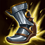

Unikalne Bierne – Ostrze Mgły: Ataki zadają dodatkowe obrażenia fizyczne równe 10% aktualnego zdrowia celu.
Unikalne Bierne – Syfon: Trzykrotne trafienie bohatera atakiem zadaje 40-120 pkt. obrażeń magicznych i wykrada 25% Movement speed prędkości ruchu na 2 sek.
STATYSTYKI
+40 pkt. obrażeń ataku
+25% prędkości ataku
+12% kradzieży życia
KOSZT
3200 szt. złota
Klepsydra Zhonyi
Unikalne Użycie – Inercja:: Na 2,5 sek. twój bohater staje się niewrażliwy na ataki, nie może też być ich celem. Jednocześnie nie może podejmować żadnych działań (120 sek. odnowienia).
STATYSTYKI
+100 pkt. mocy umiejętności
+60 pkt. pancerza
+10% skrócenia czasu odnowienia
KOSZT
2500 szt. złota
OSTRZE NIESKOŃCZONOŚCI
Unikalne Bierne – Perfekcja: Zyskujesz dodatkowo 8% obrażeń trafienia krytycznego za każde 20% szansy na trafienie krytyczne.
STATYSTYKI
+20% szansy na trafienie krytyczne
+70 pkt. obrażeń od ataku
KOSZT
3400 szt. złota
KRWIOPIJEC
Unikalne Bierne – Tarcza Boskiej Krwi: Kradzież życia z może przeleczyć cię ponad maksymalny poziom zdrowia. Nadwyżka zdrowia tworzy tarczę o wytrzymałości 50-350 pkt. (w zależności od poziomu).
STATYSTYKI
+55 pkt. obrażeń od ataku
+20% szansy na trafienie krytyczne
+20% kradzieży życia
KOSZT
3400 szt. złota
BUTY BERSERKERA

STATYSTYKI
+35% prędkości ataku
+45 jedn. prędkości ruchu
KOSZT
1100 szt. złota